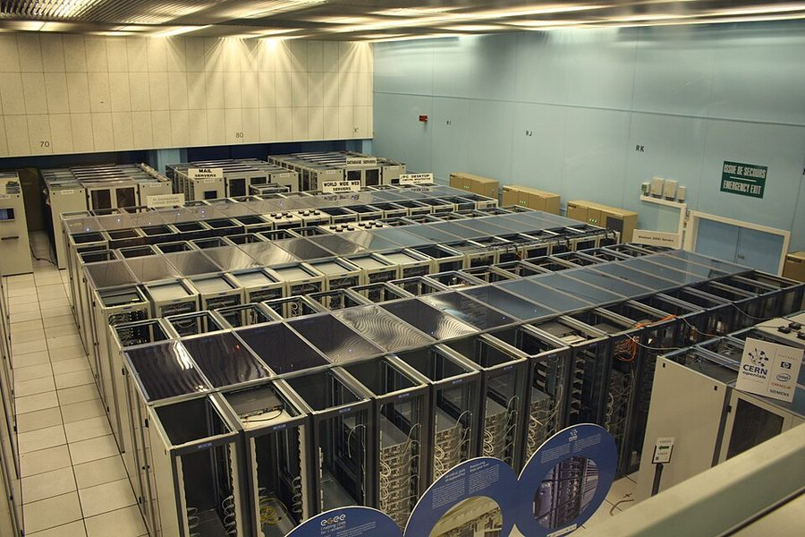

Машина · главное
Сорок миллиардов, которых ещё нет
Nebius объявил план капзатрат на 2027 год — 40 миллиардов долларов, позже уточнив диапазон до 45. Восемьдесят пять процентов суммы компания собирается взять не у инвесторов, а у будущего: предоплатами клиентов и кредитами под их контракты. Стройка оплачивается стоимостью того, что ещё не построено.
В четверг на звонке по итогам третьего квартала Nebius назвал план капитальных затрат на 2027 год: 40 миллиардов долларов. Позже цифра расширилась до диапазона 40–45 миллиардов — заметно больше, чем ждала Уолл-стрит. Компания, которая сдаёт в аренду чужие видеокарты, пообещала построить инфраструктуру масштаба небольшой страны.
Деньги предполагается не привлекать, а занимать у клиентов. Предоплаты и кредиты под контракты с инвестиционным рейтингом должны покрыть до 85% этой суммы. Механика простая: заказчик платит вперёд за мощность, которую получит через год, а Nebius на эти деньги эту мощность строит. Пока контракт жив — схема работает.
Квартал при этом вышел громким. Выручка — 981 миллион долларов, рост на 571% год к году, хотя примерно треть суммы — разовый платёж по новой модели партнёрства. На счетах 7,4 миллиарда. Прогноз на 2026 год урезан на 200 миллионов, до 3 миллиардов: причина — задержки на площадках, которые компания не контролирует. Акции за день потеряли 17%.
Самая крупная из этих площадок — Вайнленд в Нью-Джерси, где мощности арендует Microsoft. Контракт оценивается до 19,4 миллиарда долларов, но сроки уже съехали на месяцы: к концу года Nebius планирует сдать чуть больше половины объёма, остальное — во втором квартале 2027-го, то есть далеко за пределами исходного окна 2025–2026 годов.
Причина почти анекдотическая. Оператор площадки, компания DataOne, слишком быстро свернула временную генерацию, переходя на топливные элементы Bloom Energy. В августе независимые исследователи насчитали на площадке 45 газовых генераторов, работавших без разрешений; регулятор Нью-Джерси выписал штраф 1,1 миллиона долларов, признав нарушение федерального закона. Соседи отдельно судятся из-за постоянного гула.
В контракте с Microsoft есть пункт: если даты сорваны и альтернативной мощности не предложено, затронутые услуги можно расторгнуть после льготного периода. Есть и штрафы за просрочку. Nebius утверждает, что Microsoft участвовал в перепланировании, но подтвердил ли клиент новые даты, компания не сказала; Microsoft публично ничего не отменял.
Свои собственные дата-центры Nebius сдаёт вовремя или раньше, и именно они дадут основную часть новых мощностей с 2027 года. Новые контракты третьего квартала, по словам компании, пришли с предоплатами, которые перекрывают стоимость стройки под них. Прогноз на 2027 год — выручка 12–13 миллиардов долларов и безубыточность до налогов к четвёртому кварталу.
Для того, кто платит за токены, это не абстракция. Дешёвый инференс последних двух лет стоял на вере в то, что мощность будет появляться быстрее, чем дорожать электричество, железо и земля. Nebius — публичный тест этой веры: если предоплаты не превращаются в стойки в срок, следующим шагом становится не отчёт, а цена запроса.

Коротко
- Капзатраты 202740–45 млрд долларов; до 85% — предоплаты клиентов и кредиты под контракты
- Выручка III квартала981 млн, +571% год к году; около трети — разовый платёж
- Прогноз 2026урезан на 200 млн, до 3 млрд долларов
- Контракт с Microsoftдо 19,4 млрд; часть мощности сдвинута на II квартал 2027
- Реакция рынкаакции −17% за день; на счетах 7,4 млрд долларов
Что здесь факт, а что — обещание
Факт: цифры квартала, размер капзатрат, штраф регулятора Нью-Джерси на 1,1 млн долларов, падение акций на 17% и сдвиг поставок Microsoft на 2027 год — это отчётность и материалы TechCrunch по звонку с руководством Nebius.
Обещание: выручка 12–13 млрд в 2027-м и безубыточность к четвёртому кварталу — прогноз самой компании, а не результат. Компания уже один раз понизила годовой прогноз из-за чужих площадок; ничто не мешает повторить.
Обещание: «предоплаты покроют 85% стройки» верно ровно до тех пор, пока контракты не пересматривают. По данным Bloomberg, которые приводит TechCrunch, Microsoft уже ужесточает надзор за подрядчиками и отказалась от опциона на расширение сделки с Nscale после задержек по электричеству. Предоплата — не подарок, а обязательство.
Кино
Второй материал · 5 минутЧеловек, которого похоронила пшеница
Public Domain Review выложил «A Corner in Wheat» — семь минут 1909 года о том, как биржевой угол поднимает цену хлеба с пяти центов до десяти, а потом заканчивается ямой с зерном.
Фильм короткий и злой. Открывается он на поле: фермер пересыпает семена из мешка, рядом жена и дочь, старик отец сидит у стены. Пора сеять. Дальше — контора, где человек, которого в титрах назовут Пшеничным королём, думает, как разбогатеть. Затем карточка: «В ПШЕНИЧНОЙ ЯМЕ. ПОСЛЕДНИЙ ОБМОЛОТ НАСТАЛ». Обмолачивают не пшеницу, а его противников.
Схема заняла несколько минут экранного времени. Король скупил рынок, назначил цену — и в пекарне хлеб подорожал с пяти центов до десяти, а дети остались голодными. Гриффит режет сцену богатого ужина с очередью за хлебом: приём параллельного монтажа, которым он и запомнился, здесь работает как обвинительный акт. Получилось грубовато, признаёт Public Domain Review, но в конце позолоченного века это стоило повторить.
Сюжет взят у Фрэнка Норриса, журналиста и романиста-прогрессиста: рассказ «A Deal in Wheat» 1903 года плюс финал из романа «The Octopus» 1901-го. Пшеничный король радуется прибыли, падает в яму с обмолоченным зерном и остаётся там — его хоронит товар, который его обогатил.
Самое неприятное в этой истории — что она почти документальная. За несколько месяцев до фильма похожую операцию провернул чикагский делец Джеймс А. Паттен, и хлеб в городе тоже подорожал вдвое. Когда в мае 1909 года схема рухнула, Паттен вышел из неё с прибылью около пяти миллионов долларов — Public Domain Review пересчитывает это примерно в 185 миллионов нынешних. В фильме бухгалтер подаёт королю письмо: «Вчера это добавило четыре миллиона к вашему состоянию». Гриффит даже занизил.
Норрис умер в тридцать два, не дописав задуманную трилогию «Эпос пшеницы». Public Domain Review не прячет и остального: у Норриса был воинствующий антисемитизм, а репутация Гриффита навсегда осталась связана с расизмом «Рождения нации». Разбор без этих оговорок был бы рекламой, а не историей кино.
Смотреть сейчас стоит не из-за морали — она вывешена плакатом. Интересно другое: фильм показывает финансы одновременно сверху и снизу, из конторы и из очереди, и стоит эта оптика семь центов билета. Через сто семнадцать лет механика та же, только вместо пшеницы — вычислительная мощность, а вместо ямы с зерном — просроченный контракт.
Инструментарий
Заметка · 4 минутыВодород вместо вспышки
Google выпустила Gemini 4 Hydrogen — прямую замену 3.8 Flash без поэтапного допуска. Цена API не изменилась, а у Carbon и Argon с декабря она удваивается.
Google продолжает называть модели элементами таблицы Менделеева, и Hydrogen по смыслу — самый массовый из них: он заменил Gemini 3.8 Flash во всех продуктах компании сразу, без обычной для Argon и Carbon осторожной раскатки через исследователей безопасности и самые дорогие подписки.
Заявленные числа: четыре уровня размышления, включая новый xhigh; даже в режиме high модель в 2,5 раза быстрее Flash 3.8; «сфабрикованных утверждений» по внутреннему анализу Google стало больше чем в пять раз меньше; на Terminal-Bench прирост более чем втрое. В индексе Artificial Analysis с режимом xhigh — 54 против 50 у Argon.
Практический вывод простой и неприятный. Вызов Hydrogen через API стоит те же 1,50 доллара за миллион входных токенов и 7,50 за выходные, что и 3.8 Flash: замена бесплатная. Но Carbon и Argon сейчас 2 и 10 долларов, а с декабря станут 4 и 20. Если в конфигурации что-то маршрутизируется на старшие модели «на всякий случай», декабрь удвоит этот счёт.
Ограничения тоже стоит держать в голове. В поиске Hydrogen доступен всем, в приложении Gemini и AI Studio — только подписчикам AI Pro и Ultra; бесплатные и AI Plus остаются на 3.5 Flash-Lite. Обещание «лучше ссылается на источники» Google давала и раньше — это из тех улучшений, которые проверяются только своей выборкой запросов.
Небо
Заметка · 3 минутыЧетыре тысячи световых лет молодости
APOD за 13 ноября показывает NGC 206 — звёздное облако в рукаве Андромеды, где самые массивные звёзды моложе десяти миллионов лет.
Андромеда в двух с половиной миллионах световых лет — ближайшая большая спиральная галактика, и её диск астрономы разбирают по частям, как анатомы. NGC 206 — одна из таких частей: крупная звёздная ассоциация в юго-западной оконечности диска, в пыльных рукавах, рядом с розовыми областями звездообразования.
По размеру она не похожа на рассеянные скопления нашего Млечного Пути: около четырёх тысяч световых лет в поперечнике — сравнимо с гигантскими «яслями» вроде NGC 604 в галактике M33 или Туманности Тарантул в Большом Магеллановом Облаке. Голубые звёзды в ней молодые: самым массивным меньше десяти миллионов лет, то есть они родились, когда по Земле уже ходили предки человека.
Снимок сделал Дэвид Крус; для APOD его отобрали Джерри Боннелл, Сесилия Киренти, Роберт Немирофф и Кейли Роклифф. Глядя на такие кадры, легко забыть масштаб: всё это — один рукав одной из триллиона галактик, и до него два с половиной миллиона лет даже для света.
Тело
Заметка · 3 минутыДвести тридцать пять миллисекунд
Вороны определяют направление движения точек вдвое быстрее людей и обезьян, а нейроны в их мозге различают варианты уже через 70 миллисекунд. Работа вышла в Science.
Филипп Шмидбауэр и Андреас Нидер из Института нейробиологии Тюбингенского университета посадили двух серых ворон перед сенсорным экраном. Птицам показывали облако движущихся точек и просили определить, куда летит большинство — влево или вправо, — клюнув нужную сторону экрана. Среднее время ответа: 235 миллисекунд, вдвое быстрее человека и макаки, при почти стопроцентной точности на ясных сигналах.
Самое интересное — не скорость, а то, как она получается. Активность записывали в nidopallium caudolaterale, области птичьего мозга, которая функционально похожа на префронтальную кору. Уже через 70 миллисекунд после появления точек нейроны, связанные с разными ответами, начинали вести себя по-разному — задолго до того, как птица клевала экран.
Вывод, который стоит унести: у птиц нет слоистой коры, но принцип накопления свидетельств и порога решения у них тот же, что у приматов. Тюбингенская команда объясняет скорость эволюционной необходимостью — тому, кто летает и работает клювом, приходится оценивать обстановку быстрее. Оговорка честная: ворон было две, и это не выборка для разговора о «разуме птиц» вообще, а аккуратный нейрофизиологический опыт.
Тяжёлый звук
Заметка · 4 минутыДвадцать первый тост за Шейна
Вышел трибьют «20th Century Paddy — The Songs of Shane MacGowan»: Спрингстин, U2, Dropkick Murphys, Том Уэйтс, Hozier, Primal Scream, Libertines и Джонни Депп поют песни покойного фронтмена The Pogues.
Альбом анонсировали в марте, а вышел он за пару недель до третьей годовщины смерти Макгауэна — тот умер 30 ноября 2023 года. Название «20th Century Paddy» звучит как тост в пабе, и материал подобран соответственно: не хиты ради хитов, а песни, которые десятилетиями пели хором.
Брюс Спрингстин записал «A Rainy Night in Soho», U2 — «Yeah, Yeah, Yeah, Yeah, Yeah», Dropkick Murphys — «The Body of an American», Глен Хансард посмертно спел «Bottle of Smoke». В списке также Том Уэйтс, Стив Эрл, Hozier, актриса Джесси Бакли, Primal Scream, Кейт Мосс, The Libertines и Джонни Депп.
Слушать это стоит не как сборник звёзд, а как проверку одного тезиса: песни Макгауэна держатся на голосе, который ничего не умел ровно и всё умел честно. Там, где приглашённая звезда пытается спеть красиво, становится слышно, что дело было не в красоте. Там, где она просто орёт вместе с характером, — работает.
Редакционный вывод: из всего вышедшего за неделю этот альбом — единственная запись, которую имеет смысл поставить целиком, а не по одному треку. И уж точно единственная, где Кейт Мосс и Том Уэйтс оказались в одном списке исполнителей не по недоразумению.